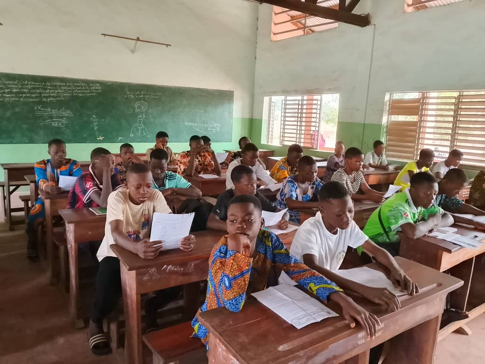

Briser les barrières : Normes de genre et sciences en milieu scolaire Breaking Barriers: Gender Norms and Science in Schools
Notre étude menée au Bénin analyse en profondeur l'impact des normes sociales patriarcales sur l'orientation académique des filles. Dans de nombreuses communautés rurales, les stéréotypes de genre continuent de véhiculer l'idée que les disciplines scientifiques et technologiques sont le domaine réservé des garçons. Cette perception réduit considérablement l'ambition des jeunes filles de s'engager dans des carrières STEM (Sciences, Technologies, Ingénierie et Mathématiques).
Pour répondre à ce défi complexe, le KEMT Center a déployé un programme expérimental combinant la déconstruction des préjugés, la mise en place d'une pédagogie inclusive dans les salles de classe, et l'accompagnement par des mentors féminins inspirants. Les résultats de la première année indiquent une amélioration substantielle non seulement de l'auto-efficacité des filles, mais aussi de leur taux d'inscription effectif.
Our comprehensive study conducted in Benin provides a deep analysis of how patriarchal social norms shape girls' academic trajectories. In many rural communities, deep-seated gender stereotypes persist in suggesting that scientific and technical disciplines are the exclusive domain of boys. This perception severely limits girls' aspirations to pursue STEM (Science, Technology, Engineering, and Mathematics) fields.
To address this multi-faceted challenge, the KEMT Center deployed an experimental program combining the deconstruction of stereotypes, the integration of inclusive pedagogy in classrooms, and mentorship from inspiring female scientists. First-year outcomes reveal a substantial increase not only in girls' academic self-efficacy, but also in their actual enrollment rates.
Piliers de l'intervention Core Intervention Pillars
Déconstruction des stéréotypes Deconstructing Stereotypes
Pédagogie inclusive Inclusive Pedagogy
Réseau de mentorat Mentorship Network
Bourses d'excellence Excellence Scholarships
Mesures d'Impact Majeures Key Impact Metrics
42%
Inscriptions STEM STEM Enrollments
65%
Taux de Rétention Retention Rate
78%
Confiance en Soi Self-Confidence
Ressources & Publications Research Materials

Dr. Horace Gninafon
Chercheur Principal Lead Researcher
Économiste du développement, spécialisé dans l'évaluation d'impact des politiques éducatives et les barrières culturelles de genre en Afrique Subsaharienne. Development economist specializing in educational policy impact evaluation and cultural gender barriers in Sub-Saharan Africa.